| Symbol |
Description |
ICE1PCS01 | Description: Standalone PFC Controller in CCM, DIP-8/SOIC-8
Keys: SMPS pfc controller
Datasheet: https://www.infineon.com/dgdl/Infineon-ICE1PCS01-DS-v01_03-en.pdf?fileId=db3a304412b407950112b427c6f13cc7 |
ICE1PCS02 | Description: Standalone PFC Controller in CCM With Input Brown-Out Protection, 65kHz, DIP-8/SOIC-8
Keys: SMPS pfc controller
Datasheet: https://www.infineon.com/dgdl/Infineon-ICE1PCS02-DS-v01_02-en.pdf?fileId=db3a304412b407950112b427c9283ccb |
ICE2PCS01 | Description: Standalone PFC Controller in CCM, DIP-8/SOIC-8
Keys: SMPS pfc controller
Datasheet: https://www.infineon.com/dgdl/Infineon-ICE2PCS01-DS-v02_03-en.pdf?fileId=db3a304412b407950112b427caa43ccf |
ICE2PCS02 | Description: Standalone PFC Controller in CCM With Input Brown-Out Protection, 65kHz, DIP-8/SOIC-8
Keys: SMPS pfc controller
Datasheet: https://www.infineon.com/dgdl/Infineon-ICE2PCS02-DS-v02_04-en.pdf?fileId=db3a304412b407950112b427cc3c3cdc |
ICE2PCS03 | Description: Standalone PFC Controller in CCM With Input Brown-Out Protection, 100kHz, DIP-8/SOIC-8
Keys: SMPS pfc controller
Datasheet: https://www.infineon.com/dgdl/Infineon-ICE2PCS03-DS-v02_01-en.pdf?fileId=db3a30431936bc4b01193b45457e52a1 |
ICE2PCS04 | Description: Standalone PFC Controller in CCM With Input Brown-Out Protection, 133kHz, DIP-8/SOIC-8
Keys: SMPS pfc controller
Datasheet: https://www.infineon.com/dgdl/Infineon-ICE2PCS04-DS-v02_01-en.pdf?fileId=db3a30431936bc4b01193b4e467952a9 |
ICE2PCS05 | Description: Standalone PFC Controller in CCM, DIP-8/SOIC-8
Keys: SMPS pfc controller
Datasheet: https://www.infineon.com/dgdl/Infineon-ICE2PCS05-DS-v01_02-en.pdf?fileId=db3a30431c69a49d011cdfb46a834373 |
ICE2PCS06 | Description: Standalone PFC Controller in CCM With Input Brown-Out Protection, 65kHz, DIP-8/SOIC-8
Keys: SMPS pfc controller
Datasheet: https://www.infineon.com/dgdl/Infineon-ICE2PCS06-DS-v01_01-en.pdf?fileId=db3a3043327f13e3013285ff4ecb2e77 |
ICE3PCS01 | Description: Standalone PFC Controller in CCM, SOIC-14
Keys: SMPS pfc controller
Datasheet: https://www.infineon.com/dgdl/Infineon-ICE3PCS01-DS-v03_00-EN.pdf?fileId=db3a304329a0f6ee0129a67ae8c02b46 |
ICE3PCS02 | Description: Standalone PFC Controller in CCM, SOIC-8
Keys: SMPS pfc controller
Datasheet: https://www.infineon.com/dgdl/Infineon-ICE3PCS02G-DS-v03_00-EN.pdf?fileId=db3a304329a0f6ee0129a67fab472b4b |
ICE3PCS03 | Description: Standalone PFC Controller in CCM, SOIC-8
Keys: SMPS pfc controller
Datasheet: https://www.infineon.com/dgdl/Infineon-ICE3PCS03G-DS-v03_00-EN.pdf?fileId=db3a304329a0f6ee0129a683c9c92b50 |
IR1153S | Description: Fixed 22.2kHz Frequency, uPFC One Cycle Control IC With Brown-Out Protection, Continuous Conduction Mode, SOIC-8
Keys: pfc controller ccm
Datasheet: https://www.infineon.com/dgdl/ir1153.pdf?fileId=5546d462533600a4015355c42a5b1649 |
IR1155S | Description: Programmable Frequency, One Cycle Control PFC IC, Continuous Conduction Mode, SOIC-8
Keys: pfc controller ccm
Datasheet: https://www.infineon.com/dgdl/ir1155spbf.pdf?fileId=5546d462533600a4015355c431f9164b |
IR1161L | Description: SmartRectifier Control IC, 500kHz, 200V, 1.0/2.5A, SOT-23-5
Keys: synchronous rectifier controller
Datasheet: https://www.infineon.com/dgdl/ir1161lpbf.pdf?fileId=5546d462533600a4015355c439a5164d |
IR11662S | Description: Advanced SmartRectifier Control IC, 500kHz, 200V, 1.0/4.0A, SOIC-8
Keys: synchronous rectifier controller
Datasheet: https://www.infineon.com/dgdl/ir11662spbf.pdf?fileId=5546d462533600a4015355c44195164f |
IR11672AS | Description: Advanced SmartRectifier Control IC, 500kHz, 200V, 2.0/7.0A, SOIC-8
Keys: synchronous rectifier controller
Datasheet: https://www.infineon.com/dgdl/ir11672aspbf.pdf?fileId=5546d462533600a4015355c455561653 |
IR1167S | Description: SmartRectifier Control IC, 500kHz, 200V, 2.0/7.0A, SOIC-8
Keys: synchronous rectifier controller
Datasheet: https://www.infineon.com/dgdl/ir1167aspbf.pdf?fileId=5546d462533600a4015355c45d9c1655 |
IR11682S | Description: Dual SmartRectifier Driver IC, 400kHz, 200V, 1.0/4.0A, SOIC-8
Keys: dual synchronous rectifier controller
Datasheet: https://www.infineon.com/dgdl/ir11682spbf.pdf?fileId=5546d462533600a4015355c47188165a |
IR11688S | Description: Dual Synchronous Rectification Control IC, 400kHz, 200V, 1.0/4.0A, SOIC-8
Keys: dual synchronous rectifier controller
Datasheet: https://www.infineon.com/dgdl/ir11688spbf.pdf?fileId=5546d462533600a4015355c47c70165c |
IR1168S | Description: Dual Smart Rectifier Driver IC, 500kHz, 200V, 1.0/4.0A, SOIC-8
Keys: dual synchronous rectifier controller
Datasheet: https://www.infineon.com/dgdl/ir1168.pdf?fileId=5546d462533600a4015355c467fa1658 |
IR1169S | Description: Advanced SmartRectifier Control IC, 500kHz, 200V, 1.0/4.0A, SOIC-8
Keys: synchronous rectifier controller
Datasheet: https://www.infineon.com/dgdl/ir1169.pdf?fileId=5546d462533600a4015355c485c4165e |
IRS2505L | Description: Boost PFC and SMPS Control IC, Critical Conduction Mode, SOT-23-5
Keys: pfc controller crcm dcm
Datasheet: https://www.infineon.com/dgdl/irs2505lpbf.pdf?fileId=5546d462533600a40153567ad42c2819 |
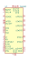
ISL6551 | Description: ZVS Full Bridge PWM Controller, SOIC-28
Keys: SMPS controller
Datasheet: https://www.intersil.com/content/dam/Intersil/documents/isl6/isl6551.pdf |
L4981A | Description: Power Factor Corrector, Fixed Frequency Average Current Mode, DIP-20/SOIC-20
Keys: SMPS pfc controller
Datasheet: http://www.st.com/resource/en/datasheet/l4981.pdf |
L4981B | Description: Power Factor Corrector, Line Modulated Frequency Average Current Mode, DIP-20/SOIC-20
Keys: SMPS pfc controller
Datasheet: http://www.st.com/resource/en/datasheet/l4981.pdf |
L4984D | Description: CCM PFC Controller, SSOP-10
Keys: SMPS pfc controller
Datasheet: http://www.st.com/resource/en/datasheet/l4984d.pdf |
L6561 | Description: Transition Mode Power Factor Corrector, DIP-8/SOIC-8
Keys: SMPS pfc controller
Datasheet: http://www.st.com/resource/en/datasheet/l6561.pdf |
L6562 | Description: Transition-Mode PFC Controller, DIP-8/SOIC-8
Keys: SMPS pfc controller
Datasheet: http://www.st.com/resource/en/datasheet/l6562.pdf |
L6562A | Description: Transition-Mode PFC Controller, DIP-8/SOIC-8
Keys: SMPS pfc controller
Datasheet: http://www.st.com/resource/en/datasheet/l6562a.pdf |
L6562AT | Description: Transition-Mode PFC Controller, DIP-8/SOIC-8
Keys: SMPS pfc controller
Datasheet: http://www.st.com/resource/en/datasheet/l6562at.pdf |
L6563 | Description: Advanced Transition-Mode PFC Controller, SOIC-14
Keys: SMPS pfc controller
Datasheet: http://www.st.com/resource/en/datasheet/l6563.pdf |
L6563A | Description: Advanced Transition-Mode PFC Controller, SOIC-14
Keys: SMPS pfc controller
Datasheet: http://www.st.com/resource/en/datasheet/l6563.pdf |
L6563H | Description: High Voltage Start-Up Transition-Mode PFC, SOIC-16
Keys: SMPS pfc controller
Datasheet: http://www.st.com/resource/en/datasheet/l6563h.pdf |
L6563S | Description: Enhanced Transition-Mode PFC Controller, SOIC-14
Keys: SMPS pfc controller
Datasheet: http://www.st.com/resource/en/datasheet/l6563s.pdf |
L6564 | Description: 10-Pin Transition-Mode PFC Controller, SSOP-10
Keys: SMPS pfc controller
Datasheet: http://www.st.com/resource/en/datasheet/l6564.pdf |
L6564H | Description: High Voltage Start-Up Transition-Mode PFC, SOIC-14
Keys: SMPS pfc controller
Datasheet: http://www.st.com/resource/en/datasheet/l6564h.pdf |
L6564T | Description: 10-Pin Transition-Mode PFC Controller for Outdoor Applications, SSOP-10
Keys: SMPS pfc controller
Datasheet: http://www.st.com/resource/en/datasheet/l6564t.pdf |
L6598 | Description: High Voltage Resonant Controller, DIP-16/SOIC-16
Keys: SMPS controller
Datasheet: www.st.com/resource/en/datasheet/l6598.pdf |
L6599 | Description: High Voltage Resonant Controller, DIP-16/SOIC-16
Keys: SMPS controller
Datasheet: www.st.com/resource/en/datasheet/l6599.pdf |
L6727 | Description: Single Phase PWM Controller, SOIC-8
Keys: SMPS controller
Datasheet: http://www.st.com/resource/en/datasheet/l6727.pdf |
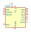
LM25119 | Description: Wide Input Range, Dual Synchronous Buck Controller, WQFN-32
Keys: Dual Synchronous Buck
Datasheet: http://www.ti.com/lit/ds/symlink/lm25119.pdf |
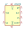
LM5023 | Description: Quasi-Resonant Current-Mode PWM Controller for Off-Line Supplies, OVP/OTP, Latched OVP, VSSOP-8
Keys: smps pwm controller ac-dc ac dc offline off-line quasi resonant quasi-resonant flyback
Datasheet: https://www.ti.com/lit/ds/symlink/lm5023.pdf |
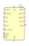
LT1248 | Description: Power Factor Controller, DIP-16/SOIC-16
Keys: pfc controller
Datasheet: https://www.analog.com/media/en/technical-documentation/data-sheets/1248fd.pdf |
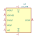
LT1249 | Description: Power Factor Controller, DIP-8/SOIC-8
Keys: pfc controller
Datasheet: https://www.analog.com/media/en/technical-documentation/data-sheets/1249fbs.pdf |
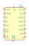
LT1509 | Description: Power Factor and PWM Controller, DIP-20/SOIC-20
Keys: pfc pwm controller
Datasheet: https://www.analog.com/media/en/technical-documentation/data-sheets/lt1509.pdf |
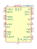
LT4295xUFD | Description: IEEE 802.3bt PD Interface with Forward/Flyback Controller, QFN-28
Keys: LTPoE++ IEEE 802.3af IEEE 802.3at IEEE 802.3bt
Datasheet: https://www.analog.com/media/en/technical-documentation/data-sheets/LT4295.pdf |
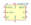
LTC1624CS8 | Description: High Efficiency N-Channel Switching Regulator Controller, SOIC-8
Keys: Switching Regulator Controller
Datasheet: https://www.analog.com/media/en/technical-documentation/data-sheets/1624f.pdf |
LTC3805xMSE | Description: Adjustable Frequency current Mode Flyback DC/DC controller, MSOP-10
Keys: flyback dc-dc switcher switching
Datasheet: https://www.analog.com/media/en/technical-documentation/data-sheets/3805fg.pdf |
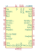
LTC3890 | Description: 60V dual 2-phase synchronous step-down DC/DC controller, QFN-32
Keys: switching buck converter regulator dual-output
Datasheet: https://www.analog.com/media/en/technical-documentation/data-sheets/3890fc.pdf |
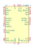
LTC3890-1 | Description: 60V dual 2-phase synchronous step-down DC/DC controller, SSOP-28
Keys: switching buck converter regulator dual-output
Datasheet: https://www.analog.com/media/en/technical-documentation/data-sheets/38901fb.pdf |
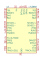
LTC3892 | Description: 60V dual 2-phase synchronous step-down DC/DC controller, continuous conduction, QFN-32
Keys: switching buck converter regulator dual-output
Datasheet: https://www.analog.com/media/en/technical-documentation/data-sheets/38921fc.pdf |
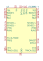
LTC3892-1 | Description: 60V dual 2-phase synchronous step-down DC/DC controller, forced continuous conduction mode, TSSOP-28
Keys: switching buck converter regulator dual-output
Datasheet: https://www.analog.com/media/en/technical-documentation/data-sheets/38921fc.pdf |
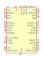
LTC3892-2 | Description: 60V dual 2-phase synchronous step-down DC/DC controller, pulse-skipping, QFN-32
Keys: switching buck converter regulator dual-output
Datasheet: https://www.analog.com/media/en/technical-documentation/data-sheets/38921fc.pdf |
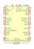
LTC7810 | Description: 150V dual 2-phase synchronous step-down DC/DC controller, LQPF-48
Keys: switching buck converter regulator dual-output
Datasheet: https://www.analog.com/media/en/technical-documentation/data-sheets/LTC7810.pdf |
NCP1200D100 | Description: PWM Current-Mode Controller for Off-Line Supplies, AC-DC, 100kHz, SOIC-8
Keys: SMPS Controller AC-DC
Datasheet: http://www.onsemi.com/pub_link/Collateral/NCP1200-D.PDF |
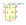
NCP1200D40 | Description: PWM Current-Mode Controller for Off-Line Supplies, AC-DC, 40kHz, SOIC-8
Keys: SMPS Controller AC-DC
Datasheet: http://www.onsemi.com/pub_link/Collateral/NCP1200-D.PDF |
NCP1200D60 | Description: PWM Current-Mode Controller for Off-Line Supplies, AC-DC, 60kHz, SOIC-8
Keys: SMPS Controller AC-DC
Datasheet: http://www.onsemi.com/pub_link/Collateral/NCP1200-D.PDF |
NCP1200P100 | Description: PWM Current-Mode Controller for Off-Line Supplies, AC-DC, 100kHz, PDIP-8
Keys: SMPS Controller AC-DC
Datasheet: http://www.onsemi.com/pub_link/Collateral/NCP1200-D.PDF |
NCP1200P40 | Description: PWM Current-Mode Controller for Off-Line Supplies, AC-DC, 40kHz, PDIP-8
Keys: SMPS Controller AC-DC
Datasheet: http://www.onsemi.com/pub_link/Collateral/NCP1200-D.PDF |
NCP1200P60 | Description: PWM Current-Mode Controller for Off-Line Supplies, AC-DC, 60kHz, PDIP-8
Keys: SMPS Controller AC-DC
Datasheet: http://www.onsemi.com/pub_link/Collateral/NCP1200-D.PDF |
NCP1203D100 | Description: PWM Current-Mode Controller for Universal Off-Line Supplies Featuring Standby and Short Circuit Protection, AC-DC, 100kHz, SOIC-8
Keys: SMPS Controller AC-DC
Datasheet: http://www.onsemi.com/pub_link/Collateral/NCP1203-D.PDF |
NCP1203D40 | Description: PWM Current-Mode Controller for Universal Off-Line Supplies Featuring Standby and Short Circuit Protection, AC-DC, 40kHz, SOIC-8
Keys: SMPS Controller AC-DC
Datasheet: http://www.onsemi.com/pub_link/Collateral/NCP1203-D.PDF |
NCP1203D60 | Description: PWM Current-Mode Controller for Universal Off-Line Supplies Featuring Standby and Short Circuit Protection, AC-DC, 60kHz, SOIC-8
Keys: SMPS Controller AC-DC
Datasheet: http://www.onsemi.com/pub_link/Collateral/NCP1203-D.PDF |
NCP1203P100 | Description: PWM Current-Mode Controller for Universal Off-Line Supplies Featuring Standby and Short Circuit Protection, AC-DC, 100kHz, PDIP-8
Keys: SMPS Controller AC-DC
Datasheet: http://www.onsemi.com/pub_link/Collateral/NCP1203-D.PDF |
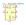
NCP1203P40 | Description: PWM Current-Mode Controller for Universal Off-Line Supplies Featuring Standby and Short Circuit Protection, AC-DC, 40kHz, PDIP-8
Keys: SMPS Controller AC-DC
Datasheet: http://www.onsemi.com/pub_link/Collateral/NCP1203-D.PDF |
NCP1203P60 | Description: PWM Current-Mode Controller for Universal Off-Line Supplies Featuring Standby and Short Circuit Protection, AC-DC, 60kHz, PDIP-8
Keys: SMPS Controller AC-DC
Datasheet: http://www.onsemi.com/pub_link/Collateral/NCP1203-D.PDF |
NCP1207A | Description: PWM Current-Mode Controller for Free Running Quasi-Resonant Operation, AC-DC, 8us min Toff, PDIP-8/SOIC-8
Keys: SMPS Controller AC-DC
Datasheet: http://www.onsemi.com/pub/Collateral/NCP1207B.PDF |
NCP1207B | Description: PWM Current-Mode Controller for Free Running Quasi-Resonant Operation, AC-DC, 4.5us min Toff, SOIC-7
Keys: SMPS Controller AC-DC
Datasheet: http://www.onsemi.com/pub/Collateral/NCP1207B.PDF |
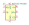
NCP1217AD100 | Description: Enhanced PWM Current-Mode Controller for High-Power Universal Off-Line Supplies, AC-DC, 100kHz, 1ms Soft Start, SOIC-8
Keys: SMPS Controller AC-DC
Datasheet: http://www.onsemi.com/pub_link/Collateral/NCP1217-D.PDF |
NCP1217AD133 | Description: Enhanced PWM Current-Mode Controller for High-Power Universal Off-Line Supplies, AC-DC, 133kHz, 1ms Soft Start, SOIC-8
Keys: SMPS Controller AC-DC
Datasheet: http://www.onsemi.com/pub_link/Collateral/NCP1217-D.PDF |
NCP1217AD65 | Description: Enhanced PWM Current-Mode Controller for High-Power Universal Off-Line Supplies, AC-DC, 65kHz, 1ms Soft Start, SOIC-8
Keys: SMPS Controller AC-DC
Datasheet: http://www.onsemi.com/pub_link/Collateral/NCP1217-D.PDF |
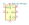
NCP1217AP100 | Description: Enhanced PWM Current-Mode Controller for High-Power Universal Off-Line Supplies, AC-DC, 100kHz, 1ms Soft Start, PDIP-8
Keys: SMPS Controller AC-DC
Datasheet: http://www.onsemi.com/pub_link/Collateral/NCP1217-D.PDF |
NCP1217AP133 | Description: Enhanced PWM Current-Mode Controller for High-Power Universal Off-Line Supplies, AC-DC, 133kHz, 1ms Soft Start, PDIP-8
Keys: SMPS Controller AC-DC
Datasheet: http://www.onsemi.com/pub_link/Collateral/NCP1217-D.PDF |
NCP1217AP65 | Description: Enhanced PWM Current-Mode Controller for High-Power Universal Off-Line Supplies, AC-DC, 65kHz, 1ms Soft Start, PDIP-8
Keys: SMPS Controller AC-DC
Datasheet: http://www.onsemi.com/pub_link/Collateral/NCP1217-D.PDF |
NCP1217D100 | Description: Enhanced PWM Current-Mode Controller for High-Power Universal Off-Line Supplies, AC-DC, 100kHz, SOIC-8
Keys: SMPS Controller AC-DC
Datasheet: http://www.onsemi.com/pub_link/Collateral/NCP1217-D.PDF |
NCP1217D133 | Description: Enhanced PWM Current-Mode Controller for High-Power Universal Off-Line Supplies, AC-DC, 133kHz, SOIC-8
Keys: SMPS Controller AC-DC
Datasheet: http://www.onsemi.com/pub_link/Collateral/NCP1217-D.PDF |
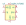
NCP1217D65 | Description: Enhanced PWM Current-Mode Controller for High-Power Universal Off-Line Supplies, AC-DC, 65kHz, SOIC-8
Keys: SMPS Controller AC-DC
Datasheet: http://www.onsemi.com/pub_link/Collateral/NCP1217-D.PDF |
NCP1217P100 | Description: Enhanced PWM Current-Mode Controller for High-Power Universal Off-Line Supplies, AC-DC, 100kHz, PDIP-8
Keys: SMPS Controller AC-DC
Datasheet: http://www.onsemi.com/pub_link/Collateral/NCP1217-D.PDF |
NCP1217P133 | Description: Enhanced PWM Current-Mode Controller for High-Power Universal Off-Line Supplies, AC-DC, 133kHz, PDIP-8
Keys: SMPS Controller AC-DC
Datasheet: http://www.onsemi.com/pub_link/Collateral/NCP1217-D.PDF |
NCP1217P65 | Description: Enhanced PWM Current-Mode Controller for High-Power Universal Off-Line Supplies, AC-DC, 65kHz, PDIP-8
Keys: SMPS Controller AC-DC
Datasheet: http://www.onsemi.com/pub_link/Collateral/NCP1217-D.PDF |
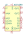
NCP1280 | Description: Active Clamp Voltage Mode PWM Controller for Off-Line Applications, SOIC-16
Keys: SMPS Controller AC-DC
Datasheet: https://www.onsemi.com/pub/Collateral/NCP1280-D.PDF |
NCP1380A | Description: Quasi-Resonant Current-Mode Controller for Off-Line Supplies, OVP/OTP, Latched OCP, SOIC-8
Keys: SMPS Controller AC-DC
Datasheet: https://www.onsemi.com/pub/Collateral/NCP1380-D.PDF |
NCP1380B | Description: Quasi-Resonant Current-Mode Controller for Off-Line Supplies, OVP/OTP, Auto-Recovery OCP, SOIC-8
Keys: SMPS Controller AC-DC
Datasheet: https://www.onsemi.com/pub/Collateral/NCP1380-D.PDF |
NCP1380C | Description: Quasi-Resonant Current-Mode Controller for Off-Line Supplies, UVP/OVP, Latched OCP, SOIC-8
Keys: SMPS Controller AC-DC
Datasheet: https://www.onsemi.com/pub/Collateral/NCP1380-D.PDF |
NCP1380D | Description: Quasi-Resonant Current-Mode Controller for Off-Line Supplies, UVP/OVP, Auto-Recovery OCP, SOIC-8
Keys: SMPS Controller AC-DC
Datasheet: https://www.onsemi.com/pub/Collateral/NCP1380-D.PDF |
NCP1653 | Description: Compact, Fixed-Frequency, Continuous Conduction Mode PFC Controller, 100kHz, DIP-8/SOIC-8
Keys: PFC SMPS Controller
Datasheet: https://www.onsemi.com/pub/Collateral/NCP1653-D.PDF |
NCP1653A | Description: Compact, Fixed-Frequency, Continuous Conduction Mode PFC Controller, 67kHz, DIP-8/SOIC-8
Keys: PFC SMPS Controller
Datasheet: https://www.onsemi.com/pub/Collateral/NCP1653-D.PDF |
NCP4308AD | Description: Synchronous Rectifier Controller, 4A/8A, 4V UVLO, GaN Capable, SOIC-8
Keys: synchronous rectifier controller
Datasheet: http://www.onsemi.com/pub/Collateral/NCP4308-D.PDF |
NCP4308AMT | Description: Synchronous Rectifier Controller, 4A/8A, 4V UVLO, GaN Capable, WDFN-8
Keys: synchronous rectifier controller
Datasheet: http://www.onsemi.com/pub/Collateral/NCP4308-D.PDF |
NCP4308DD | Description: Synchronous Rectifier Controller, 4A/8A, 4V UVLO, SOIC-8
Keys: synchronous rectifier controller
Datasheet: http://www.onsemi.com/pub/Collateral/NCP4308-D.PDF |
NCP4308DMN | Description: Synchronous Rectifier Controller, 4A/8A, 4V UVLO, DFN-8
Keys: synchronous rectifier controller
Datasheet: http://www.onsemi.com/pub/Collateral/NCP4308-D.PDF |
NCP4308DMT | Description: Synchronous Rectifier Controller, 4A/8A, 4V UVLO, WDFN-8
Keys: synchronous rectifier controller
Datasheet: http://www.onsemi.com/pub/Collateral/NCP4308-D.PDF |
NCP4308QD | Description: Synchronous Rectifier Controller, 4A/8A, 4V UVLO, Max TON, SOIC-8
Keys: synchronous rectifier controller
Datasheet: http://www.onsemi.com/pub/Collateral/NCP4308-D.PDF |
SG3525 | Description: Regulating Pulse Width Modulators, NOR Logic, PDIP-16/SOIC-16
Keys: SMPS PWM Controller
Datasheet: www.st.com/resource/en/datasheet/sg3525.pdf |
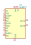
SG3527 | Description: Regulating Pulse Width Modulators, OR Logic, PDIP-16/SOIC-16
Keys: SMPS PWM Controller
Datasheet: https://www.microsemi.com/document-portal/doc_view/11120-sg1525a-sg1527a-datasheet |
TDA4862 | Description: Power Factor Controller IC for High Power Factor and Active Harmonic Filter, DIP-8/SOIC-8
Keys: PFC SMPS Controller
Datasheet: https://www.infineon.com/dgdl/Infineon-PFC_DCMICTDA4862G-DS-v02_00-en.pdf?fileId=db3a304412b407950112b417ffae24a3 |
TDA4863 | Description: Power Factor Controller IC for High Power Factor and Low THD, DIP-8/SOIC-8
Keys: PFC SMPS Controller
Datasheet: https://www.infineon.com/dgdl/Infineon-TDA4863-DS-v02_00-en.pdf?fileId=db3a304412b407950112b427d2d23ce8 |
TDA4863-2 | Description: Power Factor Controller IC for High Power Factor and Low THD, DIP-8/SOIC-8
Keys: PFC SMPS Controller
Datasheet: https://www.infineon.com/dgdl/Infineon-TDA4863_2-DS-v02_01-en.pdf?fileId=db3a304412b407950112b41802de24ab |
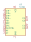
TL494 | Description: Pulse-Width-Modulation Control Circuits, PDIP-16/SOIC-16/TSSOP-16
Keys: SMPS PWM Controller
Datasheet: http://www.ti.com/lit/ds/symlink/tl494.pdf |
UC3525 | Description: Regulating Pulse Width Modulators, NOR Logic, PDIP-16/SOIC-16
Keys: SMPS PWM Controller
Datasheet: http://www.ti.com/lit/ds/symlink/uc2525b.pdf |
UC3527 | Description: Regulating Pulse Width Modulators, OR Logic, PDIP-16/SOIC-16
Keys: SMPS PWM Controller
Datasheet: http://www.ti.com/lit/ds/symlink/uc2525b.pdf |
UC3842_DIP8 | Description: Current-Mode PWM Controllers, 100% Duty Cycle, 16V/10V UVLO, PDIP-8
Keys: SMPS PWM Controller
Datasheet: http://www.ti.com/lit/ds/symlink/uc3842.pdf |
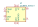
UC3842_SOIC14 | Description: Current-Mode PWM Controllers, 100% Duty Cycle, 16V/10V UVLO, SOIC-14
Keys: SMPS PWM Controller
Datasheet: http://www.ti.com/lit/ds/symlink/uc3842.pdf |
UC3842_SOIC16 | Description: Current-Mode PWM Controllers, 100% Duty Cycle, 16V/10V UVLO, SOIC-16
Keys: SMPS PWM Controller
Datasheet: http://www.ti.com/lit/ds/symlink/uc2843a.pdf |
UC3842_SOIC8 | Description: Current-Mode PWM Controllers, 100% Duty Cycle, 16V/10V UVLO, SOIC-8
Keys: SMPS PWM Controller
Datasheet: http://www.ti.com/lit/ds/symlink/uc3842.pdf |
UC3843_DIP8 | Description: Current-Mode PWM Controllers, 100% Duty Cycle, 8.4V/7.6V UVLO, PDIP-8
Keys: SMPS PWM Controller
Datasheet: http://www.ti.com/lit/ds/symlink/uc3842.pdf |
UC3843_SOIC14 | Description: Current-Mode PWM Controllers, 100% Duty Cycle, 8.4V/7.6V UVLO, SOIC-14
Keys: SMPS PWM Controller
Datasheet: http://www.ti.com/lit/ds/symlink/uc3842.pdf |
UC3843_SOIC8 | Description: Current-Mode PWM Controllers, 100% Duty Cycle, 8.4V/7.6V UVLO, SOIC-8
Keys: SMPS PWM Controller
Datasheet: http://www.ti.com/lit/ds/symlink/uc3842.pdf |
UC3844_DIP8 | Description: Current-Mode PWM Controllers, 50% Duty Cycle, 16V/10V UVLO, PDIP-8
Keys: SMPS PWM Controller
Datasheet: http://www.ti.com/lit/ds/symlink/uc3842.pdf |
UC3844_SOIC14 | Description: Current-Mode PWM Controllers, 50% Duty Cycle, 16V/10V UVLO, SOIC-14
Keys: SMPS PWM Controller
Datasheet: http://www.ti.com/lit/ds/symlink/uc3842.pdf |
UC3844_SOIC8 | Description: Current-Mode PWM Controllers, 50% Duty Cycle, 16V/10V UVLO, SOIC-8
Keys: SMPS PWM Controller
Datasheet: http://www.ti.com/lit/ds/symlink/uc3842.pdf |
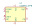
UC3845_DIP8 | Description: Current-Mode PWM Controllers, 50% Duty Cycle, 8.4V/7.6V UVLO, PDIP-8
Keys: SMPS PWM Controller
Datasheet: http://www.ti.com/lit/ds/symlink/uc3842.pdf |
UC3845_SOIC14 | Description: Current-Mode PWM Controllers, 50% Duty Cycle, 8.4V/7.6V UVLO, SOIC-14
Keys: SMPS PWM Controller
Datasheet: http://www.ti.com/lit/ds/symlink/uc3842.pdf |
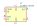
UC3845_SOIC8 | Description: Current-Mode PWM Controllers, 50% Duty Cycle, 8.4V/7.6V UVLO, SOIC-8
Keys: SMPS PWM Controller
Datasheet: http://www.ti.com/lit/ds/symlink/uc3842.pdf |
UC3854 | Description: High-Power Factor Preregulator, DIP-16/SOIC-16W
Keys: PFC SMPS Controller
Datasheet: http://www.ti.com/lit/ds/symlink/uc3854.pdf |
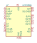
UCC1895J | Description: BiCMOS, Advanced Phase-ShiftPWM Controller, CDIP-20
Keys: Phase-shift full-bridge converter
Datasheet: http://www.ti.com/lit/ds/symlink/ucc3895.pdf |
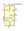
UCC24610D | Description: GREEN Rectifier Controller Device, 600kHz, SOIC-8
Keys: synchronous rectifier controller
Datasheet: http://www.ti.com/lit/ds/symlink/ucc24610.pdf |
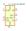
UCC24610DRB | Description: GREEN Rectifier Controller Device, 600kHz, DFN-8
Keys: synchronous rectifier controller
Datasheet: http://www.ti.com/lit/ds/symlink/ucc24610.pdf |
UCC24612-1DBV | Description: High Frequency Synchronous Rectifier Controller, 1MHz, Min On Time = 375ns, SOT-23-5
Keys: synchronous rectifier controller
Datasheet: http://www.ti.com/lit/ds/symlink/ucc24612.pdf |
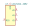
UCC24612-2DBV | Description: High Frequency Synchronous Rectifier Controller, 800kHz, Min On Time = 540ns, SOT-23-5
Keys: synchronous rectifier controller
Datasheet: http://www.ti.com/lit/ds/symlink/ucc24612.pdf |
UCC24630DBV | Description: Synchronous Rectifier Controller, 200kHz, CCM, SOT-23-6
Keys: synchronous rectifier controller
Datasheet: http://www.ti.com/lit/ds/symlink/ucc24630.pdf |
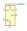
UCC24636DBV | Description: Synchronous Rectifier Controller, 130kHz, DCM/TM, SOT-23-6
Keys: synchronous rectifier controller
Datasheet: http://www.ti.com/lit/ds/symlink/ucc24636.pdf |
UCC25600 | Description: High-Performance Resonant Mode Controller, SOIC-8
Keys: SMPS PWM Controller
Datasheet: http://www.ti.com/lit/ds/symlink/ucc25600.pdf |
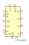
UCC256301 | Description: Hybrid Hysteretic LLC Resonant Controller, SOIC-16
Keys: SMPS PWM Controller
Datasheet: https://www.ti.com/lit/ds/symlink/ucc256301.pdf |
UCC2891 | Description: SMPS Current-Mode Active Clamp PWM Controller, SOIC-16/TSSOP-16
Keys: SMPS PWM Controller
Datasheet: http://www.ti.com/lit/ds/symlink/ucc2891.pdf |
UCC2892 | Description: SMPS Current-Mode Active Clamp PWM Controller, SOIC-16/TSSOP-16
Keys: SMPS PWM Controller
Datasheet: http://www.ti.com/lit/ds/symlink/ucc2892.pdf |
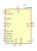
UCC2893 | Description: SMPS Current-Mode Active Clamp PWM Controller, SOIC-16/TSSOP-16
Keys: SMPS PWM Controller
Datasheet: http://www.ti.com/lit/ds/symlink/ucc2893.pdf |
UCC2894 | Description: SMPS Current-Mode Active Clamp PWM Controller, SOIC-16/TSSOP-16
Keys: SMPS PWM Controller
Datasheet: http://www.ti.com/lit/ds/symlink/ucc2894.pdf |
UCC2895DW | Description: BiCMOS, Advanced Phase-ShiftPWM Controller, SOIC-20
Keys: Phase-shift full-bridge converter
Datasheet: http://www.ti.com/lit/ds/symlink/ucc3895.pdf |
UCC2895N | Description: BiCMOS, Advanced Phase-ShiftPWM Controller, DIP-20
Keys: Phase-shift full-bridge converter
Datasheet: http://www.ti.com/lit/ds/symlink/ucc3895.pdf |
UCC2895PW | Description: BiCMOS, Advanced Phase-ShiftPWM Controller, TSSOP-20
Keys: Phase-shift full-bridge converter
Datasheet: http://www.ti.com/lit/ds/symlink/ucc3895.pdf |
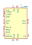
UCC2897 | Description: SMPS Advanced Current-Mode Active Clamp PWM Controller, TSSOP-20/QFN-20
Keys: SMPS PWM Controller
Datasheet: http://www.ti.com/lit/ds/symlink/ucc2897.pdf |
UCC3800 | Description: Low-Power BiCMOS Current-Mode PWM Controllers, 100% Duty Cycle, 7.2V/6.9V UVLO, DIP-8/SOIC-8/TSSOP-8
Keys: SMPS PWM Controller
Datasheet: http://www.ti.com/lit/ds/symlink/ucc3800.pdf |
UCC3801 | Description: Low-Power BiCMOS Current-Mode PWM Controllers, 50% Duty Cycle, 9.4V/7.4V UVLO, DIP-8/SOIC-8/TSSOP-8
Keys: SMPS PWM Controller
Datasheet: http://www.ti.com/lit/ds/symlink/ucc3800.pdf |
UCC3802 | Description: Low-Power BiCMOS Current-Mode PWM Controllers, 100% Duty Cycle, 12.5V/8.3V UVLO, DIP-8/SOIC-8/TSSOP-8
Keys: SMPS PWM Controller
Datasheet: http://www.ti.com/lit/ds/symlink/ucc3800.pdf |
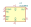
UCC3803 | Description: Low-Power BiCMOS Current-Mode PWM Controllers, 100% Duty Cycle, 4.1V/3.6V UVLO, DIP-8/SOIC-8/TSSOP-8
Keys: SMPS PWM Controller
Datasheet: http://www.ti.com/lit/ds/symlink/ucc3800.pdf |
UCC3804 | Description: Low-Power BiCMOS Current-Mode PWM Controllers, 50% Duty Cycle, 12.5V/8.3V UVLO, DIP-8/SOIC-8/TSSOP-8
Keys: SMPS PWM Controller
Datasheet: http://www.ti.com/lit/ds/symlink/ucc3800.pdf |
UCC3805 | Description: Low-Power BiCMOS Current-Mode PWM Controllers, 50% Duty Cycle, 4.1V/3.6V UVLO, DIP-8/SOIC-8/TSSOP-8
Keys: SMPS PWM Controller
Datasheet: http://www.ti.com/lit/ds/symlink/ucc3800.pdf |
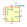
UCC3808D | Description: Low Power Current Mode Push-Pull PWM, SOIC-8
Keys: SMPS PWM Controller
Datasheet: http://www.ti.com/lit/ds/symlink/ucc3808-2.pdf |
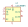
UCC3808N | Description: Low Power Current Mode Push-Pull PWM, PDIP-8
Keys: SMPS PWM Controller
Datasheet: http://www.ti.com/lit/ds/symlink/ucc3808-2.pdf |
UCC3813-0 | Description: Low-Power Economy BiCMOS Current-Mode PWM, 100% Duty Cycle, 7.2V/6.9V UVLO, DIP-8/SOIC-8/TSSOP-8
Keys: SMPS PWM Controller
Datasheet: http://www.ti.com/lit/ds/symlink/ucc3813-1.pdf |
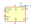
UCC3813-1 | Description: Low-Power Economy BiCMOS Current-Mode PWM, 50% Duty Cycle, 9.4V/7.4V UVLO, DIP-8/SOIC-8/TSSOP-8
Keys: SMPS PWM Controller
Datasheet: http://www.ti.com/lit/ds/symlink/ucc3813-1.pdf |
UCC3813-2 | Description: Low-Power Economy BiCMOS Current-Mode PWM, 100% Duty Cycle, 12.5V/8.3V UVLO, DIP-8/SOIC-8/TSSOP-8
Keys: SMPS PWM Controller
Datasheet: http://www.ti.com/lit/ds/symlink/ucc3813-1.pdf |
UCC3813-3 | Description: Low-Power Economy BiCMOS Current-Mode PWM, 100% Duty Cycle, 4.1V/3.6V UVLO, DIP-8/SOIC-8/TSSOP-8
Keys: SMPS PWM Controller
Datasheet: http://www.ti.com/lit/ds/symlink/ucc3813-1.pdf |
UCC3813-4 | Description: Low-Power Economy BiCMOS Current-Mode PWM, 50% Duty Cycle, 12.5V/8.3V UVLO, DIP-8/SOIC-8/TSSOP-8
Keys: SMPS PWM Controller
Datasheet: http://www.ti.com/lit/ds/symlink/ucc3813-1.pdf |
UCC3813-5 | Description: Low-Power Economy BiCMOS Current-Mode PWM, 50% Duty Cycle, 4.1V/3.6V UVLO, DIP-8/SOIC-8/TSSOP-8
Keys: SMPS PWM Controller
Datasheet: http://www.ti.com/lit/ds/symlink/ucc3813-1.pdf |
UCC3895DW | Description: BiCMOS, Advanced Phase-ShiftPWM Controller, SOIC-20
Keys: Phase-shift full-bridge converter
Datasheet: http://www.ti.com/lit/ds/symlink/ucc3895.pdf |
UCC3895N | Description: BiCMOS, Advanced Phase-ShiftPWM Controller, DIP-20
Keys: Phase-shift full-bridge converter
Datasheet: http://www.ti.com/lit/ds/symlink/ucc3895.pdf |
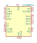
UCC3895PW | Description: BiCMOS, Advanced Phase-ShiftPWM Controller, TSSOP-20
Keys: Phase-shift full-bridge converter
Datasheet: http://www.ti.com/lit/ds/symlink/ucc3895.pdf |